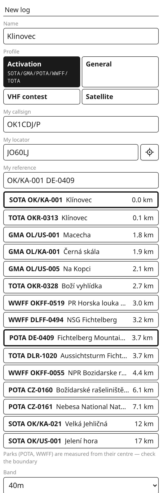
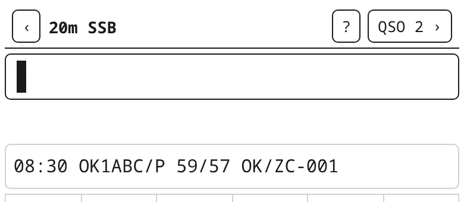
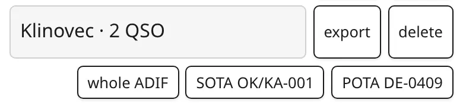

kQSO — first steps
Two complete examples from creating the log to sending it off: a VHF contest and an activation (SOTA, POTA, WWFF…). The details of each step are in the manual.
1. VHF contest
Step 1: create the log
On the log list tap + New log and pick the VHF contest profile. Fill in your call and locator (6 characters; the crosshair button takes it from your position). The IARU R1 contest covers all IARU Region 1 style contests, Field Day included; the entry is the whole contest or 6 hours. Pick the band and mode you will start the contest on (you switch to the other bands in the log during the contest, see step 4), and tap Create.

The log's locator can't be changed later, and the points are counted from it. Check it right away.
Step 2: the first QSO
The header shows the band, the mode and, boxed, the serial you give the other station. Type what you hear: the call, the report with the serial and the locator, and press Enter. Then an empty Enter saves the QSO and the boxed number goes up.

OK2KZR 59123 JN99AF ⏎ ⏎: report 59, serial 123, locator; the QRB shows at once.You don't have to type the report: OK2KZR 123 JN99AF is the same (59 is filled in). And the QSO doesn't have to be on one line: send each part with Enter as the other station gives it (Piece by piece). It is saved once it has the call, the serial and the locator.
Step 3: let it suggest
From two characters on, the strip offers calls from the database of stations that work VHF contests. A tap fills the call in, and when the database knows the locator it offers it as + locator. Stations already in the log on this band are shown inverted; a dupe you type turns the whole line black.


Step 4: move to 70 cm
The band is switched by typing: 70cm ⏎. The serials go on, they are shared by all bands. The QRV chip next to a call shows the other bands the station is usually on; the ones you already worked it on are struck out. For a station you have from 2 m, kQSO fills in its locator from the log right away.

70cm ⏎.
Back to 2 m: 2m ⏎. More in the manual: Changing band and mode.
Step 5: during the contest
QSO n › in the header opens the QSO list with points and the band's score. Tap a QSO to fix it; the last QSO can also be edited with E ⏎ and deleted with D ⏎. From the list you get to the Statistics (QSOs and points per hour, large squares, the longest QSOs) and the Map.


On a tablet or a computer in landscape with a keyboard, kQSO shows the contest panel on the right with the big serial, the rate and the points.
Step 6: after the contest, send the EDI
On the log list tap EDI next to the contest. Pick the category at the top (SO, MO, CHECK), fill in the power, antenna and equipment of each band (kQSO keeps them for next time) and save the files, one per band (01OK1XXX.edi). Send them to the contest manager as the contest rules say.


The QSOs go to your own logbook with export (ADIF with all bands) or Wavelog.
2. Activation (SOTA, POTA, WWFF…)
The example shows a SOTA summit that also lies in a POTA park. GMA, WWFF, TOTA and BOTA work the same way; only the reference and where you upload the log differ.
Step 1: on site, create the log
+ New log, the Activation profile, your call (with /P if you like). Tap the crosshair button: it fills the locator from your position and, under My reference, offers the nearest SOTA and GMA summits, POTA and WWFF parks, TOTA towers and BOTA bunkers within 25 km. Tap to add them, several at once if you like (a summit + a park). It works without signal too, when the area is downloaded (Settings → Offline references; the area around home downloads by itself).

Step 2: QSOs
Type the call and the received report: DL1ABC 579 ⏎, an empty ⏎ saves. The sent report is 59 / 599; type another one with T (DL1ABC 579 T559). When the station gives no report, the call alone is enough.

DL1ABC 579: 40 m CW.Band and mode are switched by typing: 20m ssb ⏎. They stay for the next QSOs until you change them.
Step 3: QSO with another activator (S2S, P2P)
When a station calls from another summit, park, tower or bunker, add its reference after the call. It is typed with slashes, the last one becomes a dash: OK1ABC/P 57 OK/ZC/001 ⏎ ⏎. The last saved QSO then shows under the line, reference included.

How many QSOs make a valid activation is up to the program (SOTA 4, POTA 10, WWFF 44); the count is in the header (QSO n).
Step 4: at home, export and upload
On the log list tap export. When the activation has several own references, a row comes up with the whole ADIF and one file per reference, named the way each program wants it (e.g. OK1CDJ-P@DE-0409-20260815.adi). Upload each file to its program: SOTA to sotadata.org.uk, POTA to pota.app, the others as their program says.

Activations aren't pushed to Wavelog. With one reference, export saves a single ADIF straight away.
Next: hardware keyboard, radio and CW keyer, satellites. The whole manual.